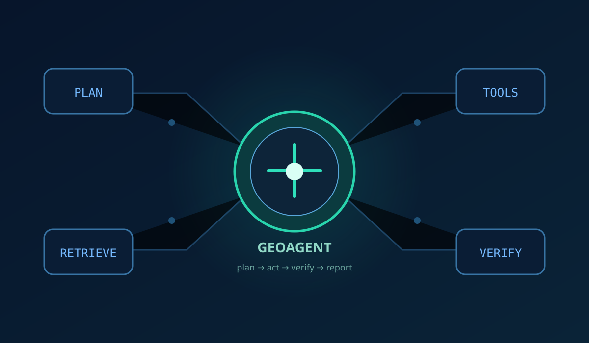
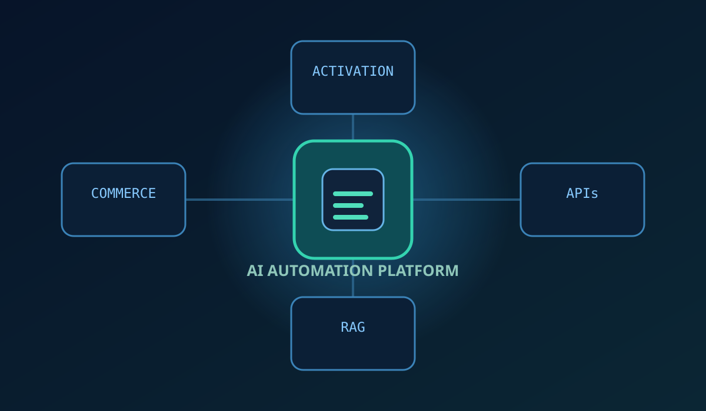

2025
Product engineering
AI & Mobile Developer
Smart It Partner · TunisIntegrated RAG and recommendation workflows into a mobile product and built computer-vision capabilities for wildlife monitoring.
Related work ↗AI/ML Engineer · Graduate Researcher
I'm Mortadha Ghnimi, an AI/ML engineer and graduate researcher pursuing an M.S. in Artificial Intelligence at Grand Valley State University. I build systems across agentic AI, machine learning, computer vision, remote sensing, data science, and high-performance computing.
Agentic AI · Computer Vision · Remote Sensing · ML Systems
Open to Summer 2027AI / ML / Research internships
Selected evidence
A quick look at results across machine learning, systems, research, and applied AI.

Agentic AI · Research tools
An agentic research and data-analysis platform that plans tasks, selects tools, verifies results, and produces grounded reports.

Applied AI · Product systems
A commerce and knowledge platform connecting secure onboarding, fulfillment, automation, and grounded AI retrieval.
 1st place · 93.4% accuracy
1st place · 93.4% accuracy
Computer vision · Model evaluation
A three-CNN ensemble trained from scratch, combining stronger augmentation, pseudo-labeling, and test-time augmentation.
More selected work
02 / Research
Estimate expected vegetation health from satellite history and environmental context, then flag unusual drops. Training and validation use 2022–2025; 2026 remains an unseen test year.


04 / Experience
A simple progression: build products, ship applied AI, then go deeper into research.
Product engineering
Integrated RAG and recommendation workflows into a mobile product and built computer-vision capabilities for wildlife monitoring.
Related work ↗Applied AI
Built a deployed commerce and knowledge platform integrating APIs, webhooks, secure workflows, retrieval, and backend services.
Platform case study ↗Graduate research
Researching vegetation-stress monitoring from multisensor satellite time series and foundation-model representations.
Current research ↑05 / Skills & Expertise
A focused technical profile across intelligent systems, machine learning, and research engineering.
LLM agents, retrieval, tool use, workflow automation, APIs, and human-in-the-loop systems.
Deep learning, computer vision, data science, model evaluation, and experimentation under real constraints.
High-performance ML, temporal modeling, remote sensing, multimodal data, and research-grade pipelines.
Technical toolkit
Grouped by the work they support rather than by buzzword count.
My applied AI work focuses on grounded generation, multi-step orchestration, tool use, and reliable workflows around the model.
Training, evaluation, ensembling, feature engineering, computer vision, and practical experimentation across structured and visual data.
Data processing for machine learning and Earth observation, including multisensor satellite time series and geospatial analysis.
Backend services, APIs, deployment packaging, performance optimization, and low-level systems work around ML workloads.
1st Place ML Competition · 1st Place HPC Leaderboard · Springer ICR'26 Co-author · Merit Graduate Assistantship · Top-ranked B.S. graduate